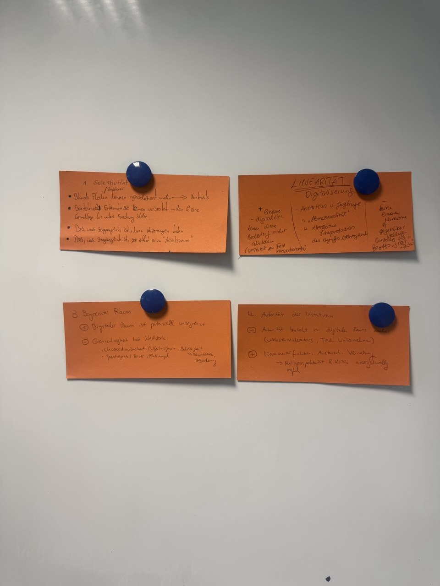
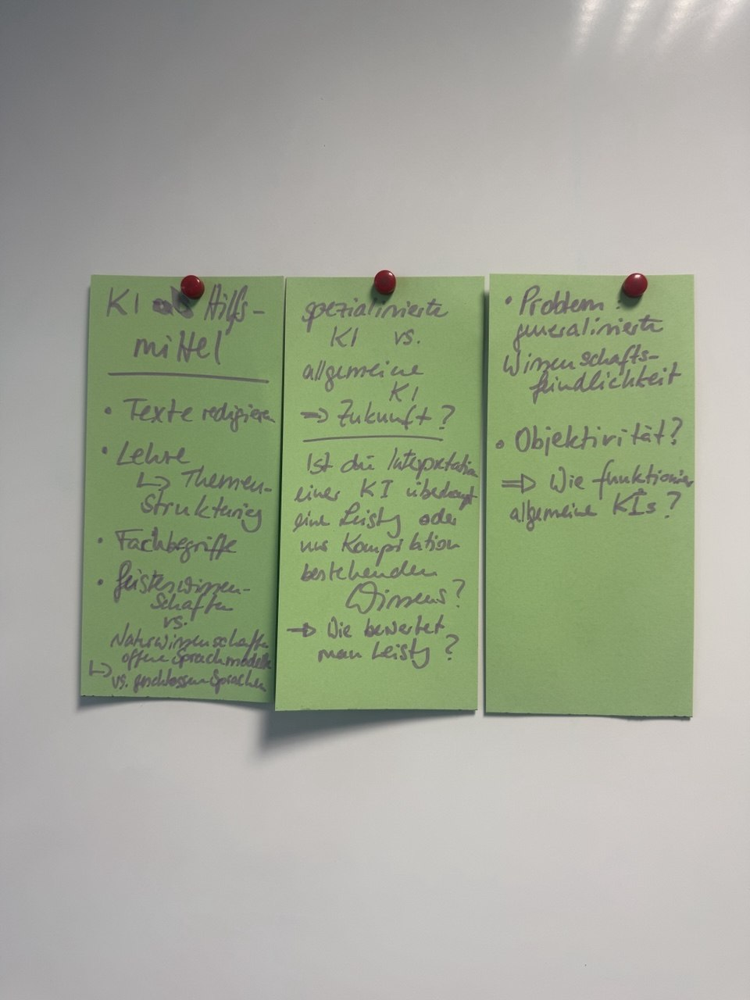
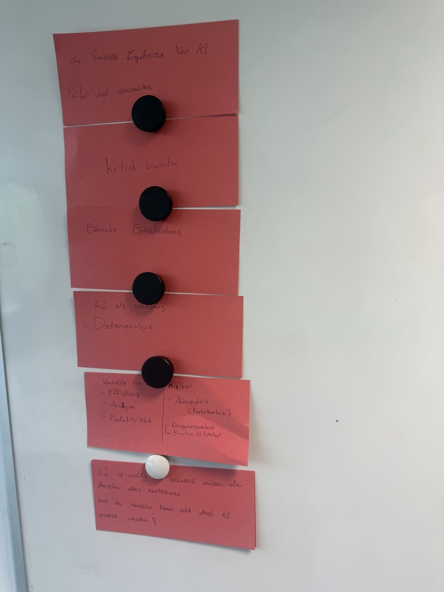

Sitzung 5: Verständnis der Vergangenheit und KI
Einleitung: In dieser Sitzung standen zwei Themen im Mittelpunkt. Das erste Thema war das Verständnis der Vergangenheit und ihre digitale Darstellung. Das zweite Thema war die Rolle der Künstlichen Intelligenz (KI) in den Geisteswissenschaften. Die Inhalte wurden hauptsächlich in Gruppen diskutiert und anschließend gemeinsam besprochen.
Verständnis der Vergangenheit
Die Vergangenheit kann nie vollständig dargestellt werden. Historische Quellen zeigen immer nur einen kleinen Teil der Realität. Deshalb müssen wir sie mit Vorsicht interpretieren. Außerdem betrachten wir die Vergangenheit mit unserem heutigen Wissen und unseren heutigen Werten. Dadurch können Missverständnisse entstehen. Ein Verhalten oder eine Beziehung aus der Vergangenheit kann heute falsch wirken, obwohl dies damals vielleicht anders verstanden wurde. Deshalb ist der historische Kontext sehr wichtig.
Probleme der digitalen Darstellung
Bei der Diskussion wurden vier wichtige Probleme genannt:
Selektivität: Es kann nie alles gezeigt werden. Deshalb müssen Informationen ausgewählt
werden.
Manche Quellen oder Perspektiven bleiben dabei unsichtbar.
Linearität: Geschichte wird oft als feste Reihenfolge dargestellt. In Wirklichkeit verlaufen
viele
Ereignisse gleichzeitig und beeinflussen sich gegenseitig.
Begrenzter Raum: Bücher, Museen und Ausstellungen haben nur begrenzten Platz. Deshalb können
nicht
alle Informationen präsentiert werden.
Autorität: Museen, Archive und Expertinnen oder Experten entscheiden, welche Informationen
veröffentlicht werden. Dadurch beeinflussen sie, wie Menschen Geschichte verstehen.
Digitale Medien bieten neue Möglichkeiten, lösen diese Probleme aber nicht vollständig.
KI in den Geisteswissenschaften
KI kann als Hilfsmittel genutzt werden. Sie kann zum Beispiel Texte bearbeiten, Daten analysieren, Metadaten erstellen oder Informationen schneller zusammenfassen. Als Vorteile wurden eine höhere Effizienz, schnellere Analysen und eine bessere Produktivität genannt. Gleichzeitig wurden auch Risiken diskutiert. Dazu gehören eine zu starke Abhängigkeit von KI, der Verlust eigener Kompetenzen und eine geringere Kreativität. Außerdem wurde gefragt, wie wissenschaftliche Leistungen in Zukunft bewertet werden und ob eine KI nur vorhandenes Wissen kombiniert oder wirklich neue Erkenntnisse schaffen kann.
Verantwortung des Menschen
KI kann viele Aufgaben übernehmen und Forschende unterstützen. Trotzdem muss ein Mensch die Ergebnisse prüfen, kritisch bewerten und ethische Entscheidungen treffen. Die Verantwortung kann nicht an eine KI abgegeben werden. Außerdem können digitale Inhalte später als Trainingsdaten für KI genutzt werden. Deshalb müssen Forschende sorgfältig überlegen, welche Informationen sie veröffentlichen und wie sie diese präsentieren.
Fazit
Die Sitzung zeigte, dass sowohl digitale Technologien als auch KI viele neue Möglichkeiten bieten. Gleichzeitig entstehen dadurch neue Herausforderungen. Vergangenheit kann nie vollständig dargestellt werden und KI kann den Menschen nicht ersetzen. Kritisches Denken, historische Einordnung und die Verantwortung des Menschen bleiben deshalb die wichtigsten Grundlagen wissenschaftlicher Arbeit.
Material aus der Sitzung


